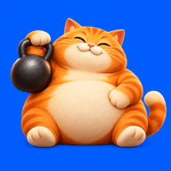

LAZY GYM PLANNERАтлас движений Новая демонстрацияЖим штанги
Рассмотрите движение, опоры и работу мышц.
Загружаем демонстрацию…
Опускайте гриф к нижней части груди. Сохраняйте опору стоп и таза.

LAZY GYM PLANNERАтлас движений Новая демонстрацияРассмотрите движение, опоры и работу мышц.
Опускайте гриф к нижней части груди. Сохраняйте опору стоп и таза.